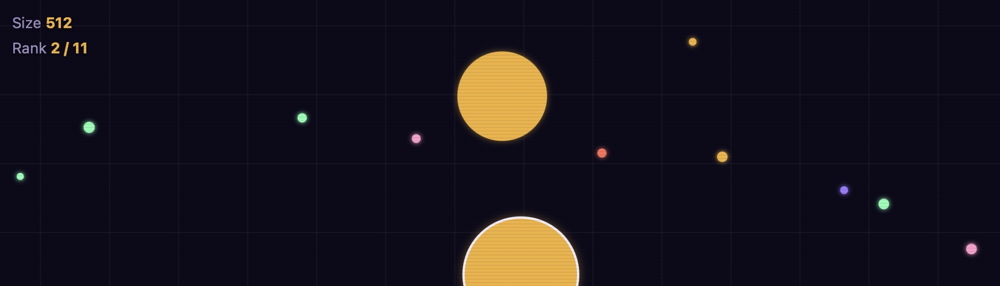
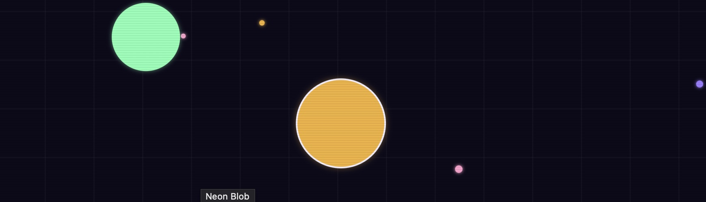
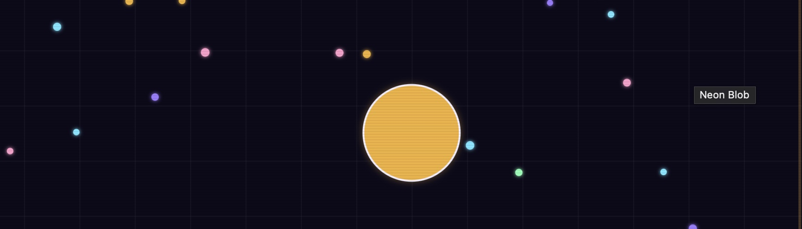

Free · No download · Play in browser
Move to absorb glowing pellets and smaller blobs to grow — but watch out, anything bigger than you is a threat until you catch up.
How to play Neon Blob
Move your mouse (or drag your finger on mobile) to steer — your blob always drifts toward the cursor. Glowing pellets are scattered across the arena; glide over them to grow. You can absorb any blob noticeably smaller than you by touching it, but a blob noticeably bigger than you can do the same to you, so the real skill is judging size at a glance and knowing when to chase versus when to run. The bigger you get, the slower you move, so staying nimble has its own advantages too.
Neon Blob screenshots



Controls
| Action | Desktop | Mobile |
|---|---|---|
| Steer | Move mouse | Drag finger on screen |
| Absorb | Touch a smaller blob or pellet | Touch a smaller blob or pellet |
| Start / Retry | Click the on-screen button | Tap the on-screen button |
Tips & strategies
- Check size before you commit. A blob has to be noticeably bigger than you to eat you (and vice versa) — near-equal sizes just bounce off harmlessly, so don't panic over every blob nearby.
- Bigger means slower. As you grow, your top speed drops, so smaller blobs can often outrun you — don't waste time chasing one that's fleeing.
- Farm pellets when the coast is clear. Pellets are a safer, steadier source of growth than hunting — lean on them early before you're big enough to eat rivals confidently.
- Watch your rank, not just your size. The rank counter tells you how you stack up against every blob in the arena, which matters more than your raw size alone.
- Keep moving near big blobs. A stationary target is an easy target — drift away at an angle rather than in a straight line when a bigger blob is nearby.
Game features at a glance
- Mouse or touch steering, no keyboard required
- Ten AI-controlled rival blobs with varied starting sizes
- Eat-or-be-eaten size mechanic with a fair size-ratio rule
- Speed that scales down as your blob grows
- Live size and rank tracker while you play
- Runs entirely in-browser, no plugins or installs
About this game
Neon Blob is an original PlayItNow build, made in-house for instant browser play — no plugins, no downloads, nothing to install. If you enjoy games like Agar.io or other free online .io games, Neon Blob runs on the same simple loop: eat smaller cells and rival blobs to grow bigger, climb the rank, and stay alert for anything that could eat you first. It's a lightweight, single-player take on the classic cell-eating, grow-bigger genre, built to match the neon-arcade look used across the rest of the site.
Neon Blob — FAQ
How do I eat another blob?
Touch it — if your blob is noticeably bigger, you'll absorb it and grow. If it's noticeably bigger than you instead, it'll absorb you, so keep an eye on relative size before moving in.
Why didn't I eat that blob even though I touched it?
Blobs close in size just bounce off each other harmlessly — one has to be clearly bigger for an eat to happen. This keeps close calls fair instead of random.
Does getting bigger have any downside?
Yes — your top speed drops as your blob grows, so smaller, faster blobs can often out-maneuver you. Staying nimble has real value even late in a run.
Does it work on mobile?
Yes — steer by dragging your finger anywhere on the game screen, the same as using your mouse on desktop.
Is Neon Blob like Agar.io or other multiplayer eating games?
It's built on the same eat-and-grow formula popularized by Agar.io and other multiplayer eating games, but Neon Blob is single-player — instead of real players, you're growing against AI-controlled rival blobs. If you like grow-bigger .io games or cell-eating games in general, the core loop will feel familiar.
Looking for something else? Browse all games on PlayItNow.